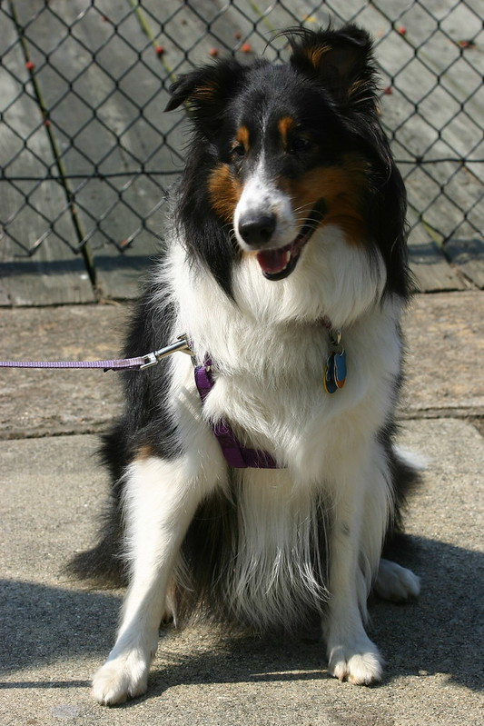

日常雜感
這是我的網站開站以來第一篇新的文章👏（其他都是舊的Medium搬運來的不算！）
這是我Blog第一篇日常雜感（reflection），我想嘗試寫點跟這些主題有關的內容：跟朋友交流的心得、水管影片學到的新知、對網路文章或時事的評論…等。我設想這系列大多會是簡短、較無組織的想法，而比較完整的筆記tag則會設成Notes。我感覺更新頻率不會很高，有想法才寫，但目標是持之以恆！
今天來嘗試寫前幾周看跟動物顏色有關的影片紀錄，沒什麼個人感想，單純覺得是有趣的新知，就記錄在這了。
前情提要
約莫2–3個月前，因為要準備GRE和托福二戰，又開始找很多英文影片看。以前一直很想看喜劇類的美劇，但試了一些都對不到我的胃口。改看脫口秀跟單口相聲後，我感覺不是每一場都有梗（e.g. Trevor Noah），或笑點很仰賴英美的文化背景。至於那些真的好笑的片段，似乎都早就被放到網路上了，唯一比較打中我笑點的Jimmy O. Yang也被我看完了。
於是乎，我開始嘗試看些知識型影片，畢竟我本來就愛學點亂七八糟的新知。一看不得了，好多個頻道主題都蠻和我胃口的，Vox、Kurzgesagt、Be Smart、Howtown…等，玲朗滿目。其實以前我也嘗試過，但大學時可能沒有英文考試壓力，也沒有那麼常使用英文，有時看/聽得挺吃力，這次經過美國交換+英文考試的壓力+GRE幫我擴大的單字量，發覺看起來輕鬆許多了。而且最重要的是，很多著名英文頻道都很注重出處跟專家說法，不自己亂做臆測，像是Kurzgesagt都有附上專家背書跟期刊佐證；相比之下，台灣許多自稱知識型頻道經營者根本只根據一本書跟不可靠的資料，就嘗試胡亂推論，沒有專家或學理佐證。
因此，最近我一方面覺得我的英文能力進展太慢跟這些頻道相見恨晚，另一方面也很感嘆台灣人的知識來源怎麼品質如此低落。台灣人的科學素養跟媒體識讀真的需要好好加強阿！
好吧，回到記錄新知的主軸，今天我想記錄的新知識來自Be Smart頻道的「Why Does Every Animal Look Like This?」，題目是我以前從來沒注意到的，覺得很有趣，值得紀錄一下，不過就沒什麼個人想法了，更像是筆記。我也沒有再仔細看一次影片了，純按印象紀錄。
動物的皮膚和毛髮顏色有結構可循？
影片提出的問題是：
為甚麼動物腹部（靠地面的皮膚/毛髮）都是淺色，而背部（遠離地面的皮膚/毛髮）都是深色？
若文字不好理解，可以看下面這張狗狗的圖片，他的背部是黑色但肚子是白色。

仔細想想，似乎很多四隻腳著地的動物都是如此，而且，魚類也是如此。恩~確實是一個我沒想過，但很普遍的現象。
生物學家的解釋？
既然跟生物有關，影片整理的生物學解釋不出意料是跟「生存」有關。地面上有太陽光照著，所以背部毛髮深色，白色肚子也因為影子變成深色，如此一來，天敵的眼中會看到一團深色的物體，甚至透過背部顏色，可以跟背景融合，成為動物的camouflage。
不過這個解釋對地面上的動物適用，但套用到魚類來說，似乎生效的方式不同。影片的解釋是：從下往上看一條魚，因為海上方有陽光，所以底下的掠食者看到的是一片白色。同理，掠食者由上往下看，看到的是深色的背部和地下的黑色海底。換言之，魚類皮膚顏色的分佈只是很巧合地跟地面上的動物類似，但運作方式不同，殊途同歸。
例外和我自己的想法
這種單一解釋看似很powerful，但科學解釋都有例外。影片提到企鵝黑色的背部可以幫助吸熱，所以他們可能是出自熱能儲存的原因，恰好發展出黑背白肚的皮膚顏色分佈。
看完後，我第一個想法是，人類的皮膚似乎沒有這麼明顯的顏色結構（或許深色皮膚的人種有一點算？），這是否展現出人類的生存並不仰賴這種簡單的掠食關係？此外，好像仍有動物是例外，譬如蛇似乎四周都是同個顏色。